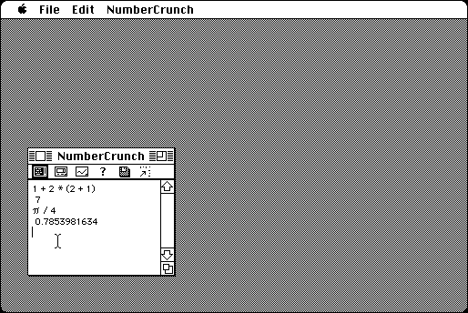

Download
NC1.45.zip (41K) NumberCrunch 1.45 repackaged into a zipped hfs disk image and checksum file. The disk image can be mounted with Mini vMac.
NC1.45.sea.hqx (74K) NumberCrunch 1.45 in the original format.
copyright: Jim Mahoney
mod date: Apr 19, 1995
license: free for non-commercial use
official url :
NumberCrunch
A numerical tool for the Macintosh. My favorite program for simple calculations, for its simple text based interface - you type an equation and press return, and it's evaluated. It also has some additional features, like graphing functions. A later version, NumberCrunch II (see below), has far more features.

Download NumberCrunch II. A "scientific calculator which emphasizes array and matrix operations." Requires "1 Meg of memory" and "system 6.07" (or later).
NCII_v2p1.zip (696K) NumberCrunch II version 2.1 repackaged into a zipped hfs disk image and checksum file. The disk image can be mounted with Mini vMac.
NCII_v2p1.sea.hqx (1.1M) NumberCrunch II version 2.1 in the original format.
If you find these downloads useful, please consider helping the Gryphel Project, which hosts them.
Here are the md5 checksums for the downloads, signed with Gryphel Key 5:
--------- GRY SIGNED TEXT --------- a02f8ec251b4ec1868a43fc0d1ad2e82 NC1.45.zip adb3cf9f6d80114ffda5877861bf449b NC1.45.sea.hqx 8540c1d4266e114336c7522dd919118a NCII_v2p1.zip 5b92b2abcadd0189f84f8c543e95b0a5 NCII_v2p1.sea.hqx ------- BEGIN GRY SIGNATURE ------- Gry/4Xa8CFcUzxdN/IG7Uv+h826NEdYrcIic7QyPGTJz2LSRFzC58XM/v+aiYMyR OLVaVyaOtOrqnbOCEed9sYEFW3GP9ikwfmbSH8UOG5pYKeBGpTV0mIXXFM/nu7eA v5KExIBVOf+MVTckXPWj7fKIN8zZ6hdeXYprhfg0ocZweWWSxOu2/LqUSkQZ8f4l -------- END GRY SIGNATURE --------